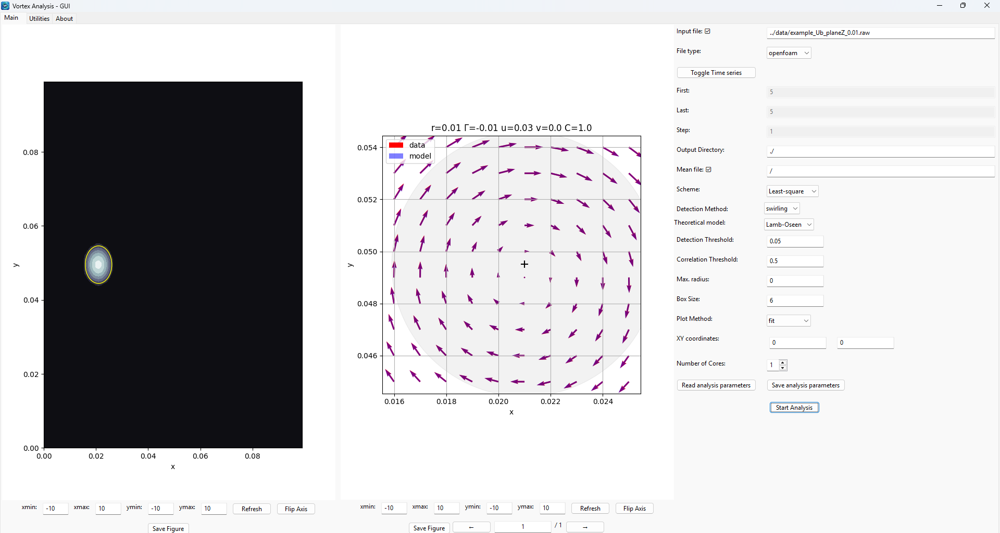
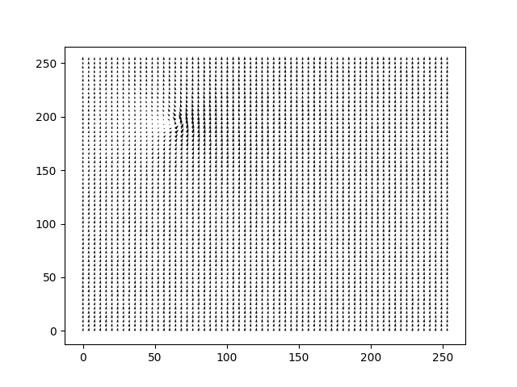

Software options¶
Graphical User Interface (GUI)¶
The GUI contains 3 panels:
Main panel: to perform vortex fitting
Utilities: tools to generate a custom vortex and to convert files (netCDF <-> ASCII format)
About: displays information about the code
{kind=link}

Fig. 13 Main page of the VortexFitting Gui¶
The main page displays 2 figures: the left one for the global vorticity field, the right one for the detected vortex.
When several vortices are found, one can sweep between the different vortices, with the arrows behind the figure.
Each figure can be resized with a specific interface below, and can be exported.
The right side panel lists all the options needed to perform VortexFitting. Those parameters are stored in a config file (.cfg format), which can be loaded or saved with the bottom buttons.
One can
How to use the code / detection and fitting options¶
Data input¶
The data used can be of different format. For NetCDF, the axis of the velocity components are ordered like z, y, x, where z can also be the number of samples in a 2D field.
Tecplot format (.dat), OpenFOAM (.raw) or HDF5 (.h5) export are also accepted.
If you want to implement a custom format, change the variable names, their order … it should be directly changed in the class.py file
Parameters¶
The code comes with default test cases, located in ../data/.
If no input file with the -i (–input) argument has been specified, the example_dataHIT.nc will be used.
$ vortexfitting
If we want to define a threshold for the swirling strength, we can specify with the -t (–threshold) argument, like this:
$ python3 vortexfitting.py -t 0.5
The differencing scheme can be changed with the -s (–scheme) argument:
$ python3 vortexfitting.py -s Fourth-order
Note
Available schemes:
Second-order
Least-square filter (default)
Fourth-order
We can as well change the detection method with the -d (–detect) argument
$ python3 vortexfitting.py -d Q
Note
Available methods:
Q - Q criterion
swirling - Swirling Strenght criterion (default)
delta - Delta criterion
If you want to write the detection field, the write_field function from the output.py module should be useful: it can be used in __main__.py.
An initial guessing radius can be set with -rmax argument.
$ python3 vortexfitting.py -rmax 15
An output directory can be specified with the -o (–output) argument.
$ python3 vortexfitting.py -o ../results/MY_DIRECTORY
Use arguments -first, -last and -step to analyze a set of images. Default for -step is 1.
For example, if you want to compute from image #10 to #20, each 2 images, enter:
$ python3 vortexfitting.py -first 10 -last 20 -step 2
By default, the correlation threshold to detect a vortex is 0.75. This value may be changed with the -ct (–corrthreshold) argument.
$ python3 vortexfitting.py -ct 0.85
To avoid vortices overlapping, the box size parameter -b (–boxsize) can be used. It takes an integer distance in mesh units, between two vortex centers.
$ python3 vortexfitting.py -b 10
The plot method is chosen with the -p (–plot) argument
Note
Available methods:
fit - detection and fitting, saves images (default)
detect - Locate the potential vortices (without fitting)
fields - display the velocity fields and vorticity
$ python3 vortexfitting.py -p fields
Parallelization¶
Parallelization has been added to VortexFitting since V2.0.0. It is useful on huge dataset.
The core numbers can be specified by the -nc (–corenumber) argument.
$ python3 vortexfitting.py -nc 8
It has been tested on the Gust experiment dataset from [TOWNE2023B]: the example file is about 11.4 Go.
For a specific time step (here t = 5), 283 vortices are detected.
Parameters are: swirling and least-square filter methods, with a Lamb-Oseen model, a boxsize of 6, detection threshold of 0.01, and correlation threshold of 0.5.
The tests are run on a Windows computer, with 64 Go of RAM and 32 available cores.
The effect of parallelization is provided in te following table:
Number of cores |
Elapsed time (s) |
Speed-up |
Gain (%) |
|---|---|---|---|
1 |
43.018 |
1.0× |
0% |
2 |
15.709 |
2.7× |
63.5% |
4 |
9.475 |
4.5× |
78.0% |
8 |
7.262 |
5.9× |
83.1% |
16 |
20.885 |
2.1× |
51.5% |
Data output¶
The results will be written to the ../results/ folder with the following files:
accepted.svg: The location and size of the accepted vortices
linked.svg: same as accepted.svg but can be open on the web browser with clickable vortices
vortex#_initial_vfield.png: Comparison of the velocity field of the vortex and the model
vortex#_advection_field_subtracted.png: Comparison of the velocity field of the vortex and the model, subtracting the advection velocity
vortices.dat: parameters of all the detected vortices
If you want to update the output format of vortices.dat, it should be done in the output.py file.
The format (png, pdf …) can be specified with the -of (–output_format) option.
NB: the vortices.dat file is written according to the TecPlot format. It contains some auxiliary data, to keep a record of the different parameters used.
The plot results are handled in the fitting.py module.
Generating a custom Vortex¶
It’s possible to generate a custom vortex using the generateNetCDF.py module. It will create a NetCDF file with the same characteristics as the DNS HIT file.
$ python3 generateNetCDF.py
This command will create a file generatedField.nc at the data folder.
You can tune the characteristics and position of the vortex by changing the following values directly on generatedField.nc:
core_radius;
gamma;
x_center;
y_center;
u_advection;
v_advection.
The size of the domain can also be changed on the ndim variable.
You can use the output option (-o) to specify the name of the created file, and ndim (-ndim) option to change the domain size. For example:
$ python3 generateNetCDF.py -o ./data/testGenerate.nc -ndim 300
will produce a 300x300 mesh, in a file named testGenerate.nc.
{kind=link}

Fig. 14 Vortex produced with the generateNetCDF.py function¶
Converting NetCDF to ASCII (and vice-versa)¶
If for any reason you need to convert a netCDF file to a text format (ASCII), the module convertToASCII.py can do the job. It will open the infile and save all z planes (or time) into separated files.
$ python3 convertToASCII.py -i input.nc -o output.dat
Depending on the file you need to change the variable names like velocity_x and such for the corresponding variable.
The module convertToNC.py can convert an ASCII file to a NetCDF4 format. You can specify the spatial dimensions (nx, ny respectively for x and y directions), with the options -nx or -ny
$ python3 convertToNC.py -i input.dat -o output.nc
References¶
Towne A., Dawson S. T., Brès G. A., Lozano-Duran A., Saxton-Fox T. , Parthasarathy A., Jones A. R., Biler H. , Yeh C.-A., Patel H. D., et al. A database for reduced-complexity modeling of fluid flows., AIAA journal, 61 (7) 2867–2892, 2023.